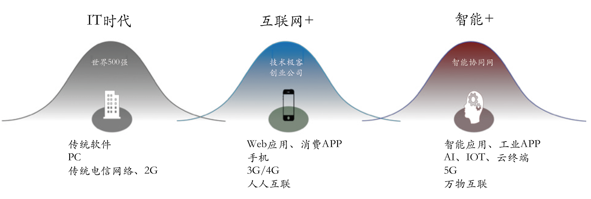

FCC China DevTalk 访谈实录
FCC DevTalk 是一档访谈栏目，邀请资深开发者、互联网从业者分享学习编程的经验、工作经历以及其他有趣的故事。
作为这个栏目的主持人，我会给每一位嘉宾的访谈稿写一段引言。本期嘉宾是于航，目前就职于饿了么。我和于航也是在 freeCodeCamp 社区认识的，但是这里我不想去写他在社区中做了哪些贡献，也不需要写他是多么的和蔼可亲（想不到更好的词了，你们知道我想表达的意思叭），大家应该比我更了解你们的于老师啦。
1. 你是什么时候去上海的？喜欢这座城市吗？
我是2011年8月份来到上海的，掐指一算应该有8年了。其中全日制本科上学时间4年，工作时间4年，一半一半。
其实我本身是一个比较有自己想法的人，所以平时希望能有足够的闲暇时间用来做自我思考。但众所周知，互联网企业的产研岗工作强度大，每天加班加点赶产品上线，其实能留给自己的时间并不多。但相较于北京、广州以及杭州，在上海的互联网企业工作就显得并没有那么“匆忙”。至少就我而言，996应该是基本没有遇到过的，一般情况下都是1075这样的节奏，大家的平日生活不会完全被工作填满，这是我喜欢在这座城市生活的一个重要原因；另外的原因就是上海本身完善的基建设施以及令人充满期待的城市未来发展规划（比如2019年的上海城市发展规划）。就像她的昵称说的那样 — “魔都”，城市每一天的变化都会让她变得更加“魔幻”。
2. 你是什么时候开始学习编程的？
记得应该是初二的时候，和舅舅一起逛旧物市场淘到了一本关于 Visual Basic 编程的书，然后回家就开始自己研究起来了。可能是工科男都有的那种猎奇心吧，就对这种可以通过代码来自由操控电脑的事情充满着乐趣。年少无知的时候甚至还写过一些 VBS 的脚本病毒拿来玩（当然没有进行病毒传播，更没有造成数据破坏）。一边在内心上演着黑客007的英雄主义独角戏，一边在外界不断学习编程知识来强化这种自豪和带入感。这可能就是传说中的“人生如戏”吧。有时候戏多一点还是可以帮助自己提高的，但注意也不能戏大翻车。
3. 你的大学时代有哪些难忘的经历？
大学的难忘经历其实还蛮多的，说一说与技术有关的吧。大二的时候就任了学校 CIC 社团（一个与计算机技术和电脑游戏有关的社团）技术部部长一职，然后带着大家一起用 Flash 做了一款日系的文字游戏。这可能是我人生中第一次独自一人带领一个团队来做一些事情，游戏的制作过程很复杂，除去最简单的开发过程，还需要涉及到美工原型设计、配乐设计以及剧情设计等多个关键阶段。团队虽小，但幸好五脏俱全，来自艺术学院的同学们都十分给力，我们参考着“狼与香辛料”这部动漫的配乐和剧情完成了游戏的制作。不得不说，刚打开游戏时的音乐和动态背景代入感还是蛮强的，想在想起来还有一丝丝感动。由于年代久远，游戏的源代码已经找不到了，着实有些遗憾。
4. 你目前在饿了么负责什么工作？
我目前主要负责阿里本地生活，饿了么侧与物流相关业务的前端技术研发，同时也负责大前端部门内部分享会的筹划工作。
5. 对于开发者如何提升自己、成为技术团队管理者，你有什么建议呢？
这是个老生常谈的话题了，首先需要认清的是你想要的是什么？在中长期3到5年的个人发展规划中，你是想成为一名技术专家？一位技术管理者？还是创业者？唯有在明确目标的前提下，我们才能够采取相应 ROI 最高的方法来实现这些目标。就开发者而言，假定你的中长期目标是成为一名 T 字型的技术专家（比如对标阿里 P7），即一专多长，在一个技术方面有所建树，而在其他方面都要有所了解，可以在需要的时候快速深入。同时也具备一定的技术管理能力，可以协调3-5人的小型团队。目标明确了之后，怎么样去做其实方式就有很多了。
比如对于技术深度来说我们一般会通过关注 Github 最新的标准草案变更来时刻把握该技术的发展方向，遇到不明确的问题可以通过 SOF (StackOverFlow) 来查找答案或进行提问。对于深度相关的技术不建议在国内的论坛/搜索引擎上来查找相关资料，因为国内互联网企业发展主要还是着重于模式创新上，对于基础技术在纵向深度上的发展创新并不多，因此资料也相对较少而且内容也不一定准确。
而另一方面，对于技术宽度我们则可以通过在日常空闲时间里关注的各类技术公众号或论坛（比如关注知乎专栏“饿了么大前端”）来进行了解。日积月累，当知识体系构建到一定程度时你会发现，原来大部分技术的底层实现思路都是一样的（比如各类虚拟机、代码优化技术等），无非就是上层各种老技术的堆叠使用而已（比如 JIT 其实就是 AOT + Interpretation，虽然这里讲的不太严谨，但实际上就是这样），这些技术方案/方法可能早在上世纪90年代的时候就已经有了。
6. 你是国内首批 WebAssembly 技术布道师之一，致力于 WebAssembly 技术研究和实践。你是如何加入到这个社区的？你在社区里负责哪些工作？可以分享一下社区最近有哪些重要进展吗？
对技术的纵向投入其实还是靠兴趣来驱动的，对 Wasm 的兴趣还是始于17年被朋友拉到的“WebAssembly 技术交流微信群”。随着对 Wasm 技术的进一步了解，我开始在饿了么技术沙龙和 Qcon 等线下技术活动中向大家普及该技术的基本情况、优势以及未来发展计划，写书也是从上海 Qcon 之后的11月份开始的。在这9个月的写作时间里，我开始定期参与 WCG (WebAssembly Community Group) 在线上定期举办的技术会议（如下图），并同时参与到了官方 Emscripten 工具链的维护中，提了一些 Commit，包含文档完善、BUG 修复和稳定性相关的一些改进点。
能够定期跟来自谷歌、Mozilla 以及苹果的朋友讨论 Wasm 相关的技术标准方案着实是一件令人激动的事情。在这个过程中我也见证了 Kripken (Emscripten 以及 Binaryen 工具链的作者，帮我的书写了序言，再次感谢！) 是怎样被谷歌从 Mozilla 挖走的。Kripken 在帮我检查书稿的时候说希望能够增加一些关于 Firefox 对 Wasm 支持性分析的相关内容，彼时的他还在 Mozilla 工作。而当书出版后我再联系他时，发现他已经开始在谷歌工作了。不仅如此，这期间 WWG 主席 JF 也从谷歌跳到了苹果。
自 MVP 标准完善后，由于时间关系我便很少再参加 WCG 举办的线上会议了。但 Wasm 技术的发展却一直看在眼里，包括 Post-MVP 标准的进一步完善以及最近提出的 WASI，无疑不是能够在未来大放异彩的技术革新。关于 WASI 的细节内容我会后续抽时间在博客里用专门的一篇文章进行介绍。
7. 你是 freeCodeCamp 上海社区的 leader，上海社区团队是一个非常有爱的团队，你们一起做了哪些好玩的事情？
迄今为止 FCC 上海社区一共举办过5场平均参与人数在20到80人之间的中小型线下技术活动，通过这几场技术活动，我也认识了一批有这着自己独特想法的朋友，比如鸡妹、老妈妈、托酱、小杰、江江（各种昵称，排名不分先后）等等。除了在办活动时会一起帮忙外，平日里我们也会在微信小群里面闲聊，或者休息日时的线下小聚。独自一人在这样一座大城市里打拼，能够有这样一群姐妹们（平时我们一般以“姐妹”相称嗯）相伴，相信再困难的事情都能够解决。这里必须放一张“姐妹群”两周年的纪念照了（群里还有单身妹子，有需要可以帮忙牵线）。
另一方面，曾经立志要通过自己的行动来为推动上海互联网技术整体氛围做出一点点贡献，但发现路漫漫，要做的还有很多。办活动并不容易，从谈免费场地和礼品、确定讲师分享主题、设计宣传海报到准备现场物料，这些环节都不是我一个人能够搞定的，在这里感谢所有为 FCC 上海社区无私投入过时间和精力的各位志愿者，以及社区伙伴。没有你们的帮助我们不可能成功地举办了这么多场活动。故事未完，今年我们还会一起努力，笔芯。下图为 2018 年 FCC 上海社区“四季”交流会的秋季场合照。
8. 自 2006 年底以来，Web 3.0 一词受到越来越多的关注，也是越来越多争论的焦点。你怎么理解 Web 3.0？
“Web 3.0”只是一个概念化的词语，其实我们很难界定什么样的发展阶段能够算作是所谓的“3.0”，因此这里就谈谈自己对未来互联网行业发展趋势的理解吧。整个互联网在过去的20年内完成了从 PC 时代到移动时代的转变，而随着 5G 技术的出现，下一个阶段可能就是所谓“万物互联”的物联网时代了（下图来自阿里研究院）。

万物互联使得分散的信息能够被有效地汇聚，信息的利用率更高，产生的附加价值更多。与此同时，“边缘计算（终端计算）”也会由于移动或 IOT 设备的硬件性能逐渐提高而成为一种主流的算力提供方式，更多的共享经济（类似 Uber、Airbnb 以及“在行”等 APP 和服务）轻资产运营模式逐渐出现。但互联网行业毕竟是个笼统的大范围，谈到发展本身还是需要下沉到具体某个垂直行业来具体分析的。比如新零售领域通过“前置仓”的引入和布局，开始更加关注最后一公里的用户体验，即时配送也开始逐渐在全行业全品类（送菜、送药、送外卖等）兴起；而短视频领域则有着从 UGC -> PGC -> MCN 再到 MPN 的变革，我们对于舶来品变得更加开放，并且尝试在本土市场进行适当的改变以符合实际市场需求。总的来看，无论是商业模式还是资本变现模式，其趋势都是基于互联网逐渐将“万物互联”的方向去演进的。因为“万物互联”本身就代表着信息的流通渠道更加多样化，能够影响到的潜在消费者也越来越多。
9. 你已经有两年多的女装经历，你觉得 “女装是以本体性别（男性）的视角来 ‘观察’ 另外一个自己。女装之后的个体其实是在本体世界观. 价值观的潜意识背景下，由本体所 ‘脑补’ 出的另一个自己。或者也可以说是自己对另一性别在潜意识下的认知”。那么，你在这段经历中最大的感悟是什么？
感悟可能就是觉得做女生还挺不容易的吧。一番打扮就得花几个小时，为了保持美好形象还得故作淑女（嗯，是我本人没错）。三厘米跟的单鞋穿一天基本就走不动路了。“世界上没有丑女人，只有懒女人”，我对这句话的体会越来越深了（求轻锤）。
10. 你最近在读什么书？分享一下阅读体会吧。
近半年读的大多都是商业相关的书，比如《零售的哲学》、《阿米巴经营》以及《3G 资本帝国》等等。最近刚读完的一本是《股权是什么（知乎一小时系列）》，从名字就能看出来这本书主要介绍的是与“股权”相关的一些基础内容。内容大体可以分为“股权基本概念”、“公司与股权之间的关系”以及“创业与股权”三块基本内容。体会的话就是能够大致了解一些常用的商业术语以及商业运作规律，比如“为什么美股上市的企业要把母公司注册在开曼群岛？”（容易避税 + VIE 模式）、“有限责任与无限责任的区别？”、“上市公司与非上市公司一般是怎样估值的？”以及“实股与期权的区别？”等等此类问题。本书可以配合另一本名为《入门风险投资的第一本书（知乎一小时系列）》的书一起阅读，“食用”效果更佳。可以将创业公司所可能遇到的一系列对接方和相关专业概念一次性解释清楚，比如从第一笔风投时需要对接的 VC，到后续帮忙介绍中间轮融资方甚至负责公司上市计划的 FA，再到实际负责中间多轮融资的 LP 和 GP 等等。
11. 你最近遇到的最大挑战是什么？
写硕士论文吧哈哈哈，毕竟还有两年就到 DL 了，是时候写起来了。另一方面就是事业上可能会有一些变动吧。但无论挑战有多大，生活还是要开心才行。
12. 你有哪些爱好？
爱好还是蛮多的，徒步、唱歌、钢琴、羽毛球、滑冰、魔方、美妆、演讲、街舞、桌球以及其他有趣的事情。最近正在学习游泳，现在到了可以浮起来的阶段了（笑。如下图所示，每次练琴的时候主子都会过来视察，一言不合就开始指导。